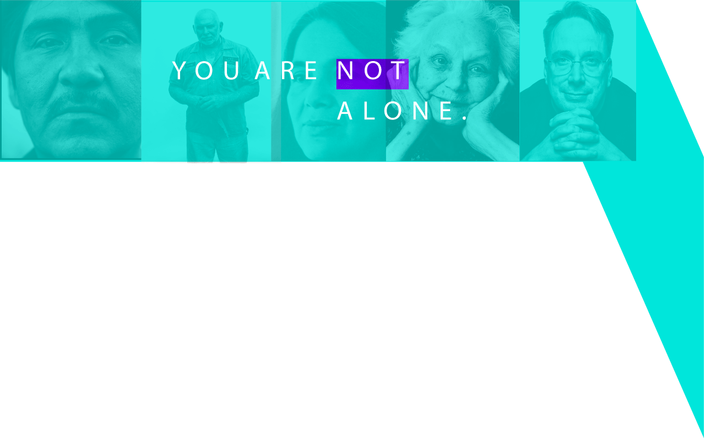
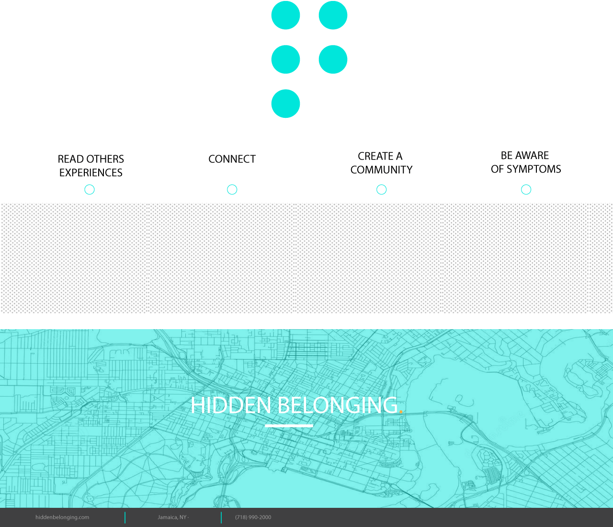

HOW IT
WORKS

HOME
STORIES
SYMPTOMS
HELP CENTERS

Discover the power
of reading other stories
and how it can help you
feel connected and
not alone.
Often times being around
or in contact with poeple
that have experienced what
you are experiencing can give
you personal advantageous
feedback.
Not being aware of symptoms
doesnt help you understand
your body and mental health.
With this knowledge you will
be able to identify symptoms
and be aware.